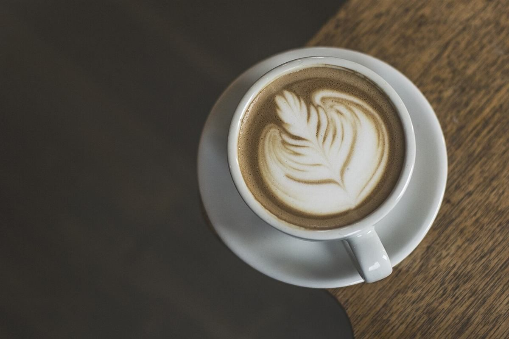
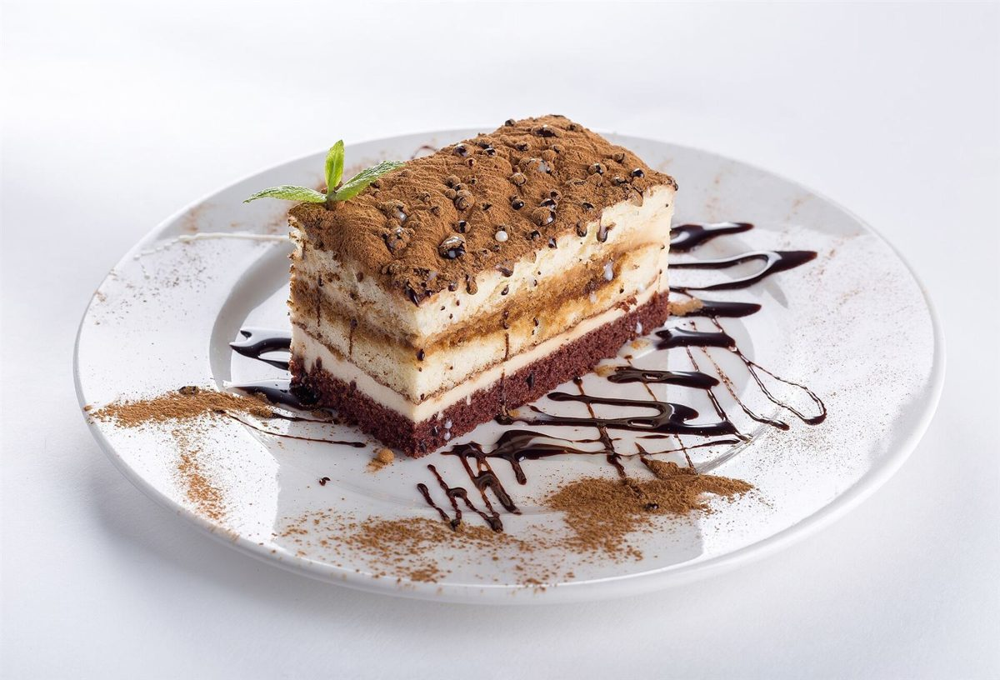

制作側の連想
醤油差しを、卓上の図にしてみる
このサイトは、食卓に置かれた醤油差しを一本の図に見立てて作りました。六つの部位に番号をふり、上の図と並べています。制作側の連想で、お店の理念・由来とは無関係です。実際の醤油差しの仕様を示すものでもありません。
凡例
六つの部位
- 1ふた胴の上にかぶせる、赤い小さな部分。
- 2空気穴ふたの上にあいている、ごく小さな穴。
- 3注ぎ口ふたの横から斜めに伸びる、細い管。
- 4首ふたの下の、胴よりも細くなったところ。
- 5胴液体を入れておく、いちばん大きな部分。
- 6底テーブルに接する、平らな面。
写真帯(イメージ)
カップとポットの写真



写真はカップやポットのイメージです。お店のものではなく、お店で提供している商品を示すものでもありません。
写真帯(イメージ)
甘いものと豆とパンの写真



写真はイメージです。お店のものではなく、お店で提供している商品を示すものでもありません。
ご案内
お店のこと(確認できたものだけ)
| 所在地 | 〒523-0881 滋賀県近江八幡市佐久間町17-1 |
|---|---|
| 電話 | 準備中 |
| 営業時間 | 準備中 |
| 定休日 | 準備中 |
| ご予約 | 準備中 |
| 駐車場 | 準備中 |
| SNS | Instagram @teaspace_saraku |